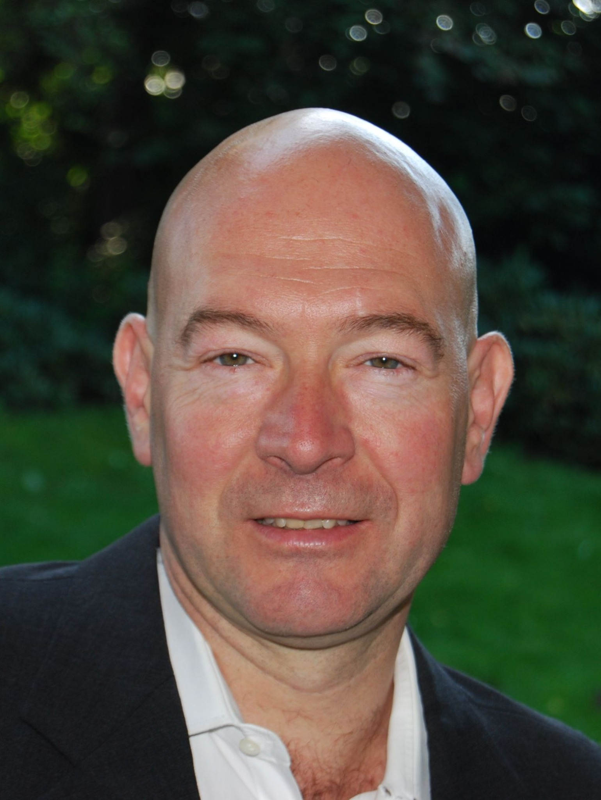

PLM Advisor | Project Management Expert | University Lecturer
20+ years bridging technology and business
Current Roles
agntec UG – Managing Director & Founder
Developing agentic-AI methods that transform complex engineering and operations workflows. Consulting in Project Management, PLM/MES/ERP Strategy and Implementation.
Developing agentic-AI methods that transform complex engineering and operations workflows. Consulting in Project Management, PLM/MES/ERP Strategy and Implementation.
FOM University – Lecturer
Teaching Product Lifecycle Management and various MBA program topics.
Teaching Product Lifecycle Management and various MBA program topics.
Education & Certifications
- MBA in General Management – Henley Management College, UK (2002)
- BA.Sc. in Automotive Engineering – University of Applied Sciences, Cologne (1988)
- PMI Certified Project Manager (PMP) (2012)
Languages
- German (Native)
- English (Practically bilingual)
Key Competencies
Project Management: 20+ years of end-to-end project management experience—from hands-on execution to designing governance and risk frameworks for complex, multi-project portfolios
Business Transformation: Expert in shaping IT-driven transformation strategies tailored to industrial settings, bridging the gap between technical and business stakeholders
Technical Expertise: Strong background in SAP-adjacent process design (SD, MM, PP) and PLM–ERP integration, with a focus on change impact analysis, configuration logic, and cross-domain alignment
Variant Management: Experience in managing product and process complexity in variant-rich industrial environments, including configuration-relevant impacts on engineering, sales, and manufacturing processes
Professional Experience
Siemens Industry Software GmbH (2008–2025)
PMO Director – DACH (2024–2025)
- PMO responsible for DACH region, supporting project teams and ensuring effective execution
- Established and improved methodologies, managed a 1,500-project portfolio, and oversaw progress, risks, and reporting
- Engaged in project operations to build executive relationships and lead de-escalation when needed
Senior Service Manager (2012–2023)
- Led an organization of 100+ solution architects, implementation consultants, and software engineers for PLM and MES systems
- Engaged with high-level customers and maintained strong trustful relationships
- Strategic and tactical decision making to align consulting capabilities with internal goals and market needs
- Coaching practicing and becoming leaders
Project Portfolio Manager (2011–2012)
- Oversaw multiple complex PLM projects within a global enterprise account
- Led a team of project managers, ensuring alignment with overall program goals
- Acted as escalation point for cross-project decisions beyond individual project scope
Senior Project Manager (2008–2011)
- Senior Project Manager and advisor for major PLM initiatives at leading industrial clients
- Led consulting projects across multiple business units of DAX 30 industrial leaders
Visteon Corporation (1996–2008)
Manager – Global Business Practices Europe (2004–2008)
- Managed engineering and business applications (PLM, ERP, MES), including hands-on project management and application maintenance
- Developed rollout schedules, deployment methodologies tailored to local needs, and project metrics
Process Manager – Engineering Change Management (2000–2004)
- Responsible for definition and documentation of business requirements for enterprise-wide engineering change process
- Led a team of employees and consultants integrating efforts with the overall SAP/ERP implementation team
Vehicle Line Manager – VW Sharan / Ford Galaxy (1997–2000)
- Commercial and technical responsibility for vehicle program content worth $70M annual revenue
- Led multiple project teams through successful development and launch of vehicle systems and components
Account Manager – VW & Porsche (1996–1997)
- Customer-related activities to promote value proposition during transformation from single-customer to multi-customer organization
Ford-Werke AG / Ford Motor Company (1989–1997)
- Manager – Product Data Management (1996–1997)
- Project Manager – Ford Ka Electrical System (1994–1995)
- Liaison Engineer – Dearborn, MI USA (1992–1994)
- Component Engineer (1989–1992)